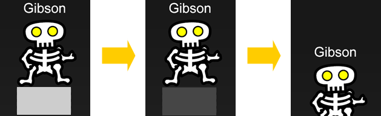
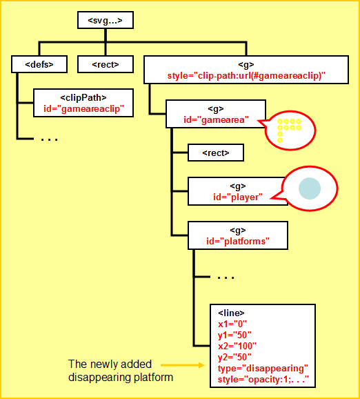

var platforms = svgdoc.getElementById("platforms");
// Create a new line element
var newPlatform = svgdoc.createElementNS("http://www.w3.org/2000/svg", "line");
// Set the various attributes of the line
newPlatform.setAttribute("x1", 0);
newPlatform.setAttribute("y1", 50);
newPlatform.setAttribute("x2", 100);
newPlatform.setAttribute("y2", 50);
newPlatform.setAttribute("type", "disappearing");
newPlatform.style.setProperty("opacity", 1, null);
newPlatform.style.setProperty("stroke", "black", null);
newPlatform.style.setProperty("stroke-width", 10, null);
// Add the new platform to the end of the group
platforms.appendChild(newPlatform);
<line x1="0" y1="50" x2="100" y2="50" type="disappearing"
style="opacity:1;stroke:black;stroke-width:10"/>

var platforms = svgdoc.getElementById("platforms");
for (var i = 0; i < platforms.childNodes.length; i++) {
var platform = platforms.childNodes.item(i);
if (platform.getAttribute("type") == "disappearing") {
...
}
}
var platformOpacity = parseFloat(platform.style.getPropertyValue("opacity"));
platformOpacity -= 0.1;
platform.style.setProperty("opacity", platformOpacity, null);
platforms.removeChild(platform);